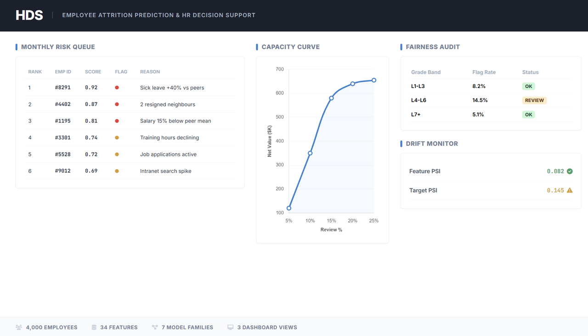

The Problem
Voluntary attrition is expensive. Replacing a mid-tenure professional costs 6--12 months of their salary in recruiting, onboarding, and lost productivity. For a 10,000-person employer, a 1-point reduction in annual attrition frees up several million dollars. HR teams rarely struggle to identify at-risk employees after they resign -- the gap is knowing where to focus retention efforts before it happens.
Why This Was Hard
- It is a human decision, not an automated one. Every flag goes to a human reviewer. The model cannot fire, penalise, or reward anyone -- it can only suggest where to look
- Attrition is rare. Around 4% of employees resign in any given period -- the model needs to surface useful flags without drowning HR in false positives
- Explanations need to be readable by HR, not data scientists. SHAP values are useful; "feature_3 contributed 0.12" is not. Reason codes need plain English
- Fairness is not optional. A model that systematically over-flags one grade band or gender is a liability, not a tool
Attrition rate -- rare event classification where precision at the top matters more than overall accuracy
Percentile thresholds keep HRBP workload constant each month, regardless of score drift
Score, flag, explain, suppress, intervene, log, track outcome, monitor drift, revalidate
The Approach
Built as a clean-room re-implementation of an employee retention system I supported at a previous role. The original used PyCaret across 120+ features; this version reproduces the same analytical patterns (leakage-safe splits, SHAP reason codes, contact suppression, intervention logging) in a portable, open-source shape with 34 features across 5 families.
How It Works
Feature Engineering
Five feature families, each tied to a known attrition signal pattern. The original system used 120+ features across the same families -- additions are mechanical.
| Family | Signal | Examples |
|---|---|---|
| Peer Comparison | How does this employee compare to peers in the same grade? | Salary vs peer mean, training vs peers, sick leave vs peers |
| Momentum | Is behaviour getting better or worse? | Leave 3M/6M ratio, training 3M/6M ratio (>1 = worsening) |
| Rolling Windows | Sustained behavioural shifts over time | Intranet views at 3M, 6M, 12M windows |
| Network | Social signals from peer-recognition graph | Resigned neighbours, influence score, recognition activity |
| HR Ratios | Composite indicators | Sick leave mix, training per tenure year, job-seeking flag |
Modelling
Logistic Regression is the default production model -- chosen for interpretability and operational stability, not because it had the highest AUC. The original system ran a PyCaret sweep and landed on the same choice for the same reasons: HR and compliance teams need to audit the model, and SHAP LinearExplainer is stable and fast.
The hds compare command benchmarks 7 estimator families (Logistic Regression,
Calibrated LogReg, Random Forest, Balanced RF, RUSBoost, Histogram Gradient Boosting,
LightGBM) on the same test set. Validation uses time-based splits with grouped K-fold
so no employee appears in both train and test.
Evaluation
AUC alone does not tell an HR team whether the model is worth deploying. HDS reports four views designed for different audiences:
| View | What It Answers | Metrics |
|---|---|---|
| Ranking quality | Can the model separate leavers from stayers? | ROC AUC, AUC stability across seeds |
| Operational quality | At top 10% flagged, how accurate are we? | Precision, recall, F1, lift |
| Threshold sweep | What happens if we flag more or fewer? | Precision-recall at 70th--95th percentile |
| Business capacity curve | Given HRBP capacity of 5/10/15%, what's the financial outcome? | True positives caught, review cost, attrition cost avoided, net value |
The capacity view is what tends to matter to senior stakeholders -- it translates classification metrics into FTE hours and dollars.
Explainability and Fairness
Plain-English SHAP explanations
Every flagged employee gets reason codes explaining why they were flagged, written for HR readers ("Sick leave share increased 40% vs peers"). Protected attributes (gender, marital status, birth cohort) are available for fairness monitoring but actively excluded from the reason strings shown to managers.
Subgroup performance every cycle
AUC, precision, recall, F1, and flag rate computed by grade band, tenure band, and gender on every training run and scored month. Flag-rate deltas above 20% relative to the overall rate are surfaced for review. Fairness is diagnostic, not decorative.
Operational Workflow
The system is designed around an operational monthly cadence, not a one-off model drop. Three components make it operationally realistic:
- Contact suppression. No employee is contacted more than once per lookback window per supervisor. Prevents HRBP fatigue and employee distrust.
- Intervention logging. Every flag produces a record: who was flagged, who reviewed it, what intervention was chosen (stay interview, compensation review, career development, wellness support), and the eventual outcome (retained / resigned / pending).
- Drift monitoring. PSI on top features each month. Below 0.10 is stable, 0.10--0.25 is investigate, above 0.25 triggers retraining. Monthly performance tracking detects silent model degradation.
Stakeholder Dashboard
Three role-based tabs built in Streamlit:
- Leadership -- aggregate risk distribution, capacity curve (net value by review %), model performance summary
- HRBP -- flagged employee list ranked by score, reason codes, intervention suggestions
- Monitoring -- fairness subgroup table, PSI drift, monthly performance trends
What I Learned
- Percentile thresholds instead of probability cutoffs. A fixed probability threshold (e.g. 0.5) produces wildly different flag counts each month as score distributions drift. "Flag the top 10%" keeps HRBP workload constant. Obvious in hindsight, but the original system ran with fixed cutoffs for months before switching.
- Contact suppression is not a nice-to-have. Without it, the same employees get flagged month after month and HRBPs stop trusting the system. The suppression ledger was one of the first things the original team built after go-live.
- Leakage is subtle in panel data. If the same employee appears in both train and test across different months, the model memorises individual patterns instead of learning population-level signals. Grouped K-fold with employee ID as the group key is non-negotiable.
- Interpretability is a feature, not a constraint. The original system tried gradient boosting first. It scored higher on AUC but HR could not explain the flags to managers. Logistic Regression with SHAP reason codes was adopted because people actually used the output.
- Fairness audits surface real problems. During development, one grade band had a 1.76x higher flag rate than the overall population. That was not a model bug -- it reflected a genuine retention problem in that band -- but without the audit, nobody would have known whether the disparity was signal or bias.
Limitations
- Uses synthetic data, not real HR records -- feature distributions and attrition patterns are simulated, not from a real employer
- 34 of 120+ features implemented -- all 5 pattern families are present, but production feature depth is not replicated
- Fairness diagnostics are illustrative -- they surface potential disparities but do not constitute a regulatory or legal review
- SHAP values indicate correlation, not causation -- reason codes are starting points for conversation, not diagnoses
- No live feedback loop -- drift is detected via distributional statistics, not real-time label feedback
Tech Stack
- Modelling: Python, scikit-learn, SHAP, LightGBM (optional), imbalanced-learn (optional)
- Data: pandas, numpy, NetworkX (peer-recognition graph)
- Config: Pydantic, PyYAML
- CLI: Typer, Rich
- Dashboard: Streamlit
- Quality: ruff, mypy, pytest
Project Information
- CategoryPeople Analytics -- Decision Support -- Responsible AI
- Year2026
- StackPython -- scikit-learn -- SHAP -- Streamlit -- Typer -- NetworkX
- GitHub josephhzy/hds